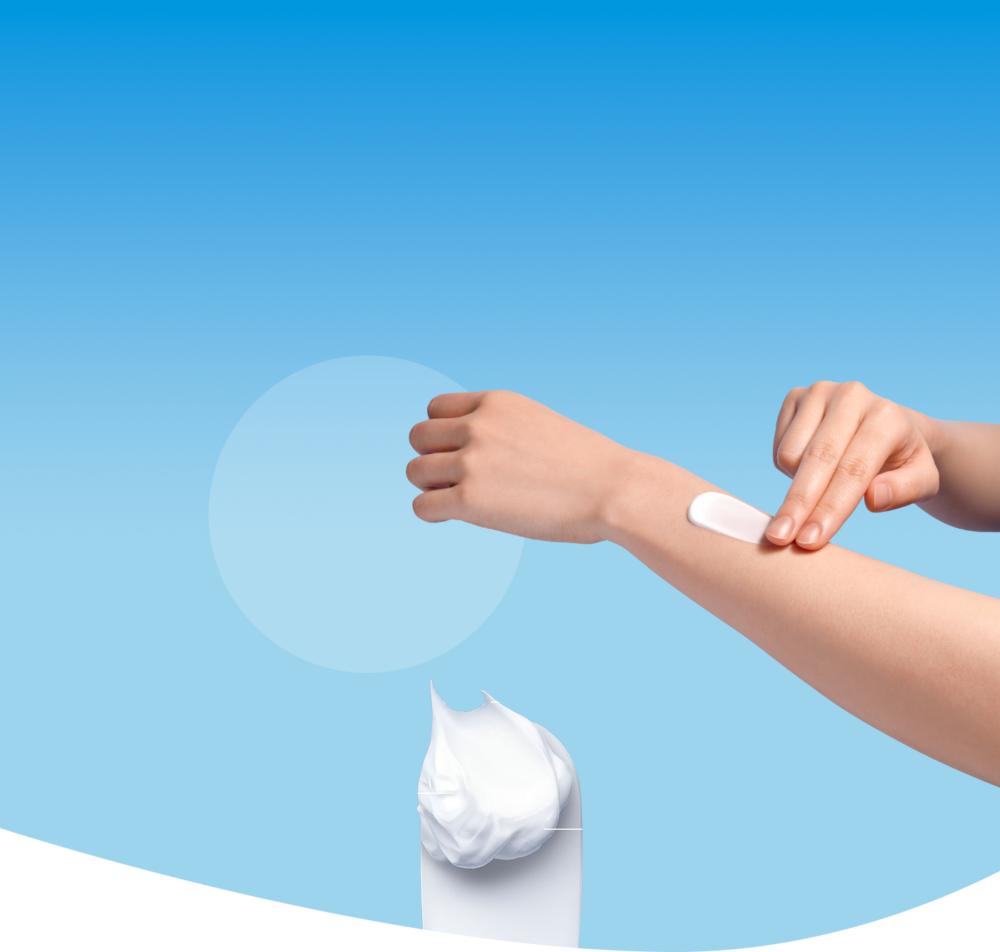
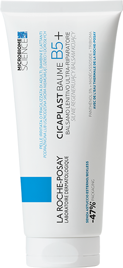
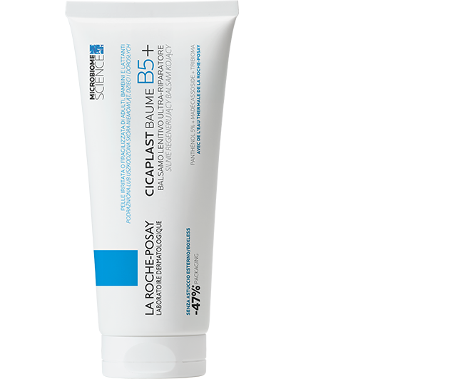
CICAPLAST
BAUME B5+
SKUTECZNA REGENERACJA
SKÓRY OD 1 DNIA1
Balsam kojący, regenerujący
dla całej rodziny
(niemowlęta, dzieci, dorośli).
PRZYSPIESZA
I WSPOMAGA PROCES
REGENERACJI NASKÓRKA
ZMNIEJSZA
WIDOCZNOŚĆ
ZACZERWIENIEŃ
NATYCHMIASTOWO KOI
PODRAŻNIENIA
Kluczowe dermatologiczne
składniki aktywne
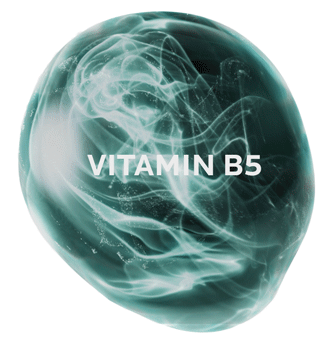
SKUTECZNOŚĆ POTWIERDZONA BADANIAMI
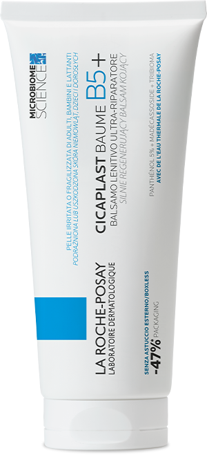
100%
Przyspiesza
regenerację2
84%
Przynosi
natychmiastowe
ukojenie4
90%
Redukuje
zaczerwienienia3
Odkryj bestsellery
la-roche posay
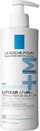
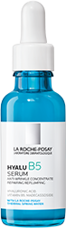
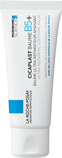
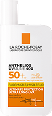
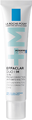
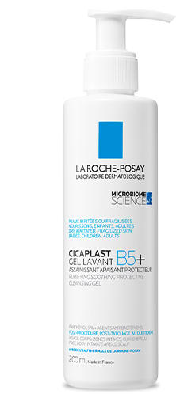
ŁAGODZI
Delikatnie oczyszcza, nawilża i natychmiastowo koi zmniejszając uczucie podrażnienia.
KONTROLUJE
Skutecznie, ale delikatnie usuwa zanieczyszczenia i wspiera regeneracją skóry, jednocześnie
ograniczając
rozwój
szkodliwych bakterii.
CHRONI
Długotrwale chroni barierę skórną tworząc film ochronny.
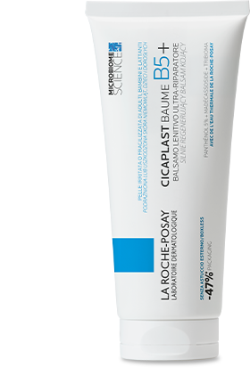
UKOJENIE
Natychmiastowo koi podrażnioną, suchą i zaczerwienioną skórę.
REGENERACJA
Wspiera i przyspiesza proces regeneracji oraz zapewnia optymalną odbudowę bariery ochronnej skóry.
OCHRONA
Nawilża, odżywia i chroni dzięki uzupełniającym składnikom: Masło Shea, Cynk i Mangan.
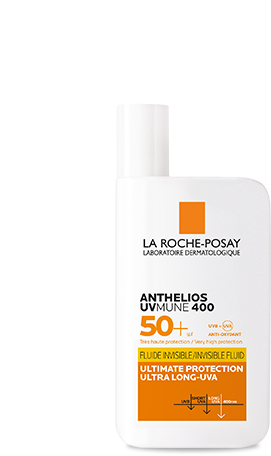
OCHRONA
Długotrwale chroni przed promieniami UVA/UVB oraz ultradługimi promieniami UVA.
UKOJENIE
Koi i odżywia skórę. Odpowiedni dla skóry wrażliwej i skłonnej do alergii słonecznej.
KONSYSTENCJA
Bardzo lekka, niewidoczna na skórze konsystencja. Nie pozostawia białych śladów na skórze.
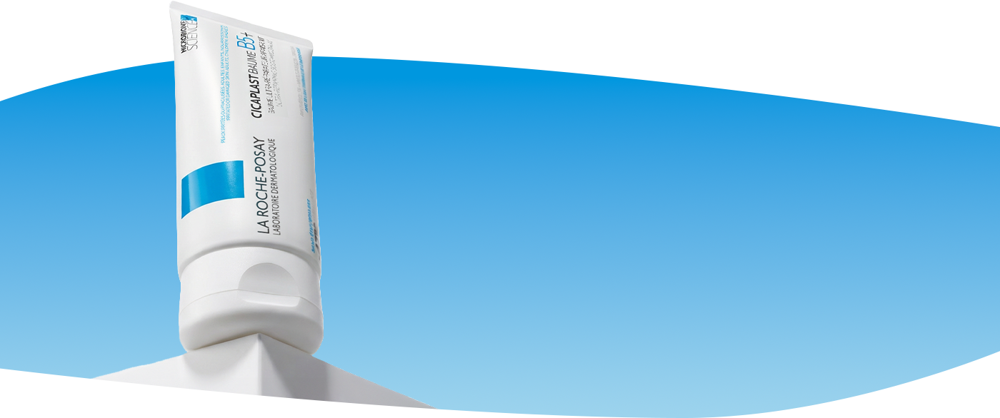
MULTIFUNKCYJNY I UNIWERSALNY:
Produkt przeznaczony do wielu potrzeb skóry:
Zaawansowana
pielęgnacja
dermatologiczna
zmieniające życie
formuły
przebadane przez
dermatologów
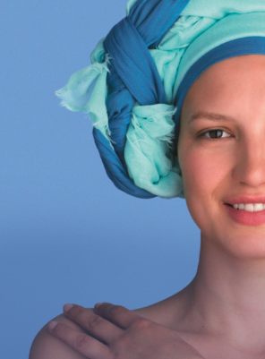
wsparcie dla
pacjentów
onkologicznych
PYTANIA I ODPOWIEDZI
Kto może stosować balsam Cicaplast Baume B5+?
Regenerujący balsam Cicaplast Baume B5+ jest odpowiedni dla całej rodziny: niemowląt, dzieci i
dorosłych. Jest
przeznaczony do pielęgnacji skóry wrażliwej i z tendencją do atopii. Mogą go stosować także osoby w
trakcie terapii
onkologicznej.
W jakich sytuacjach stosować Cicaplast Baume B5+?
Uniwersalny balsam Cicaplast Baume B5+ można stosować do codziennej pielęgnacji skóry twarzy i ciała
potrzebującej
ukojenia i ochrony. Formuła pomaga łagodzić objawy:
- okołopieluszkowego podrażnienia skóry
- odparzeń u niemowląt (z podrażnieniem i zaczerwienieniem)
- mikrouszkodzenia skóry
- potrądzikowych zmian skórnych
- powierzchownych podrażnień skóry
- podrażnień po peelingu
- podrażnień po laserze
- podrażnień po zabiegach dermatologicznych i medycyny estetycznej
- podrażnień okolic intymnych
- dyskomfortu skóry po radioterapii
- dyskomfortu skóry po chemioterapii
- suchości skóry
Dodatkowo, balsam Cicaplast Baume B5+ może działać:
- jako pielęgnacja skóry z tendencją do rybiej łuski
- jako pielęgnacja powierzchownych oparzeń I stopnia
- łagodząco po ukąszeniu owadów
- regenerująco po opryszczce
Jak stosować Cicaplast Baume B5+?
Nakładaj balsam obficie na wybraną część ciała i twarzy. Stosuj według potrzeb, dwa razy dziennie lub
więcej, na czystą,
suchą skórę. Balsam nadaje się do pielęgnacji całego ciała: również twarzy i ust. Unikaj kontaktu
dermokosmetyku z
oczami. Nie stosuj go na otwarte rany.